5 Customer Value and Retention
Customer relationships are among the most valuable assets of a business, yet they are also among the most difficult to quantify. While transactional databases record what customers have purchased, they rarely explain how purchasing behaviour evolves over time or which customers deserve the greatest commercial attention. As a result, organisations often rely on simple indicators such as historical revenue or purchase counts, even though these metrics provide only a partial view of customer behaviour.
Database marketing has long recognised that effective customer management requires combining behavioural analysis with predictive and financial perspectives rather than relying on a single performance indicator [1]. Understanding who customers are, who is likely to leave, and which relationships are expected to generate the greatest long-term value are closely related questions that should be addressed within a unified analytical framework.
This chapter develops a complete customer analytics workflow for a non-contractual retail business using transactional data from the AdventureWorks database. Unlike subscription businesses, where customer churn is explicitly observed through contract cancellations, retail businesses rarely record when a customer relationship has ended. Instead, customer behaviour must be inferred from historical purchasing activity.
The analysis is organised around three complementary tasks. First, customers are segmented using Recency, Frequency, and Monetary (RFM) variables to identify groups with similar purchasing behaviour. Second, churn is formulated as a supervised learning problem by defining customer inactivity over a future observation window. Finally, customer lifetime value (CLV) is estimated by combining customer profitability with retention risk and explicit discount-rate assumptions.
Rather than presenting these models as independent analyses, the chapter demonstrates how descriptive analytics, predictive modelling, and economic valuation can be integrated into a single decision-support workflow. The emphasis is not on producing a universal customer score, but on developing a transparent framework in which every modelling assumption remains explicit and interpretable.
5.1 Problem Definition
Customer value is inherently difficult to assess in a non-contractual business. Unlike subscription services, where customers can be classified as active or cancelled, retail customers may purchase irregularly, return after long periods of inactivity, or buy only seasonally. Consequently, the absence of recent transactions does not necessarily indicate that a customer has churned.
This uncertainty complicates several common business decisions. Which customers should receive retention efforts? Which customers appear valuable but are gradually becoming inactive? Which recently acquired customers show early signs of future growth? Which inactive customers are unlikely to return?
Historical revenue alone cannot answer these questions because it ignores how recently customers have purchased, how frequently they buy, and how likely they are to continue purchasing in the future. Likewise, prioritising customers solely according to churn probability overlooks the fact that not every customer contributes equally to the business.
The AdventureWorks database provides a realistic environment for studying these problems because it stores detailed transactional information across customers, orders, products, costs, and sales territories. Rather than relying on pre-computed customer summaries, this project reconstructs customer behaviour directly from transactional records and derives the features required for segmentation, churn prediction, and customer value estimation.
The analysis therefore addresses three related questions.
- How can customers be grouped according to their purchasing behaviour?
- Which customers appear most likely to become inactive?
- How does expected customer value change once profitability, retention risk, and discounting are considered simultaneously?
Although each question can be investigated independently, combining them provides a substantially richer understanding of customer relationships than any single model alone.
5.2 Modeling Approach
The analytical workflow follows a layered structure in which each stage provides information for the next.
The first stage focuses on behavioural segmentation. Customer-level RFM variables are computed from the complete transaction history available for each individual. Because these variables exhibit strong positive skewness, they are transformed and standardised before applying K-Means clustering. The resulting clusters are then interpreted using the original RFM variables to preserve their business meaning.
The second stage introduces prediction through churn modelling. Since customer churn is not explicitly recorded in the AdventureWorks database, an operational target is constructed by separating the available transaction history into calibration and observation periods. Customers who make no purchases during the observation window are labelled as churned, allowing the problem to be formulated as a supervised classification task while avoiding information leakage.
The final stage estimates customer lifetime value. Customer profitability is derived from historical revenue and product costs, while segment-specific retention behaviour and discount-rate assumptions are used to construct a risk-adjusted valuation framework. A regression model is then trained to approximate this valuation using the customer-level features engineered throughout the previous stages.
Viewed as a whole, the workflow progresses naturally from behavioural description to future risk estimation and finally to economic value. Rather than producing isolated analytical models, each stage complements the previous one, resulting in a coherent framework for customer prioritisation and retention planning.
5.3 Methodology and Implementation
The methodology is organised into three complementary stages that progressively transform transactional sales records into actionable customer insights. Although each stage addresses a different analytical problem, they are connected through a common customer-level feature engineering pipeline built from the AdventureWorks transactional database.
The workflow begins by describing customer purchasing behaviour through RFM segmentation. These behavioural profiles then provide additional context for a supervised churn prediction model, where customer inactivity is defined using future purchasing behaviour observed within a separate validation period. Finally, the outputs of the previous stages are combined with profitability information to construct a risk-adjusted Customer Lifetime Value (CLV) framework that supports customer prioritisation from both behavioural and financial perspectives.
Rather than treating segmentation, churn prediction, and lifetime value estimation as independent modelling exercises, the implementation integrates them into a single analytical workflow in which each stage provides information that strengthens the interpretation of the next.
5.3.1 Customer Segmentation with RFM Analysis
Customer segmentation provides the behavioural foundation for the remainder of the chapter. Instead of analysing thousands of customers individually, the objective is to identify groups with similar purchasing patterns that can later support both churn prediction and customer value estimation.
The implementation begins by extracting transaction-level data directly from the AdventureWorks database rather than relying on pre-aggregated customer tables. Sales orders, order details, products, product categories, customers, and sales territories are combined to create a reusable transactional dataset from which customer-level features can be derived consistently throughout the project.
Customer behaviour is summarised using the classical Recency, Frequency, and Monetary (RFM) framework. Recency measures the time elapsed since the customer’s most recent purchase, Frequency counts completed purchase events, and Monetary represents cumulative customer spending over the observation period. Because these variables exhibit strong positive skewness, particularly Frequency and Monetary value, they are transformed using the Box-Cox transformation and standardised before clustering to reduce the influence of extreme observations.
Customer segments are then identified using the K-Means algorithm. Rather than selecting the number of clusters arbitrarily, several candidate solutions are evaluated using complementary internal validation metrics, including the silhouette coefficient, the Calinski–Harabasz Index, and the Davies–Bouldin Index. The final segmentation balances statistical quality with business interpretability, allowing each cluster to be characterised according to the original RFM variables rather than the transformed feature space.
To complement the discrete segmentation, the implementation also introduces a continuous within-segment RFM score that ranks customers according to their relative purchasing behaviour inside each cluster. This additional layer helps distinguish customers who belong to the same behavioural segment but differ in their overall commercial importance, providing a practical prioritisation mechanism for subsequent retention activities.
The resulting customer segments constitute the descriptive layer of the analytical workflow and are subsequently incorporated as explanatory variables in both the churn prediction and customer lifetime value models.
The complete Python implementation of this workflow, including data extraction, feature engineering, clustering diagnostics, segment interpretation, and customer scoring, is available in the companion notebook linked above.
A complete Python implementation of the RFM analysis presented in this section is available in the companion notebook here.
5.3.2 Churn Prediction in Non-Contractual Relationships Based on RFM Analysis
Once the customer segments have been established, the analysis shifts from behavioural description to predictive modelling. The objective is no longer to characterise purchasing behaviour, but to identify customers who appear at risk of becoming inactive in the near future. In a non-contractual retail environment, however, this is not straightforward because the absence of recent purchases does not necessarily imply that a customer has permanently left. Instead, churn must be defined operationally from observed purchasing behaviour.
To reproduce a realistic prediction scenario, the available transaction history is divided into calibration and observation periods. All explanatory variables are computed exclusively from the calibration window, while customer activity during the subsequent observation period is used only to validate the churn outcome. This chronological separation ensures that every predictor reflects information that would have been available at the time the prediction was made, thereby preventing information leakage.
Rather than defining churn solely as the absence of future purchases, the implementation combines several behavioural indicators derived during the calibration period. Customers are first identified as potential churners if they belong to a low-activity behavioural segment, their recency exceeds their historical average purchase latency, and their within-segment RFM score falls below the average score of their corresponding segment. These behavioural conditions identify customers whose purchasing patterns are consistent with progressive disengagement rather than temporary inactivity. A customer is ultimately labelled as churned only if no additional purchases are observed during the subsequent validation period. This two-stage definition combines historical behaviour with future purchasing activity, producing a target that remains consistent with the non-contractual nature of retail customer relationships while avoiding information leakage.
The predictive feature set extends the variables developed during the segmentation stage. In addition to the original RFM variables and customer segment assignments, the implementation derives customer-level descriptors that capture purchasing cadence, average order value, customer tenure, product diversity, profitability, purchase intervals, geographic information, and several aggregated transaction statistics. Together, these variables provide a more comprehensive representation of customer behaviour than RFM alone while preserving a clear business interpretation.
Several supervised learning algorithms are evaluated under a common modelling framework using cross-validation and hyperparameter optimisation. Because churned customers represent only a minority of the customer base, particular attention is given to model evaluation under class imbalance. Performance is therefore assessed using complementary metrics, including ROC AUC, Average Precision, Precision, Recall, and F1-score. In addition, cumulative gains analysis is used to evaluate how effectively customers can be ranked according to their estimated churn risk, which is often more valuable for retention planning than binary classification alone.
Rather than producing deterministic decisions, the selected classifier estimates the probability that each customer will become inactive during the observation period. These probabilities provide a practical ranking of retention risk that can support targeted marketing campaigns, customer prioritisation, and proactive retention strategies. They also constitute one of the principal inputs for the risk-adjusted customer lifetime value framework developed in the following section.
A complete Python implementation of the churn prediction model presented in this section is available in the companion notebook here.
5.3.3 Risk-Adjusted Customer Lifetime Value Prediction
The final stage of the workflow extends the analysis from customer retention to customer value. While the churn model estimates the likelihood that a customer will become inactive, it does not indicate the potential economic impact associated with that outcome. In practice, customers with similar churn probabilities may contribute very differently to the business, making it necessary to consider both retention risk and expected profitability when prioritising commercial actions.
Customer Lifetime Value (CLV) provides a natural framework for integrating these dimensions. Following the general principles described by [1], customer value is interpreted as the present value of future customer profits rather than a simple summary of historical revenue. The implementation adopts this perspective while adapting it to a non-contractual retail environment in which future purchasing behaviour cannot be observed directly.
The modelling process begins by estimating customer-level profitability from historical sales and product costs extracted from the AdventureWorks database. These observed profits are then combined with the behavioural information obtained during the previous stages of the workflow. Instead of assuming identical future behaviour for every customer, the implementation incorporates segment-specific retention characteristics derived from the RFM analysis together with the predicted probability of churn estimated by the classification model. Segment-specific discount-rate assumptions are subsequently introduced to account for differences in the uncertainty associated with future customer relationships.
These components are combined to construct a risk-adjusted customer lifetime value that serves as the target variable for the predictive model. Since this valuation cannot be observed directly in the transactional database, it should be interpreted as a transparent economic framework based on explicit behavioural and financial assumptions rather than as a measured quantity.
Once the target has been constructed, the problem is formulated as a supervised regression task. The customer-level features engineered throughout the project—including behavioural variables, profitability measures, customer characteristics, and the outputs of the segmentation and churn models—are used to train several regression algorithms under a common cross-validation framework. Their predictive performance is assessed using complementary regression metrics together with residual analysis and predicted-versus-observed comparisons to evaluate both numerical accuracy and ranking capability.
The resulting model provides a scalable approximation of the underlying valuation framework. Rather than recomputing the complete economic model for every new customer, organisations can estimate expected customer value directly from observable behavioural characteristics while maintaining consistency with the assumptions adopted throughout the analytical workflow.
A complete Python implementation of the customer lifetime value model presented in this section is available in the companion notebook here.
An interactive Streamlit application implementing the methods presented in this chapter is available here.
5.4 Results, Discussion, and Limitations
The three stages of the analytical workflow provide complementary perspectives on customer behaviour. Customer segmentation offers an interpretable description of purchasing patterns, churn modelling estimates future customer inactivity, and customer lifetime value integrates these behavioural insights with expected economic contribution. Rather than evaluating each component independently, the results are interpreted as successive layers of information that progressively enrich the understanding of customer relationships.
5.4.1 Customer Segmentation
The exploratory analysis confirms the strong asymmetry typically observed in transactional retail data. As shown in Table 5.1, Frequency and Monetary value exhibit substantial positive skewness, indicating that most customers purchase infrequently while a relatively small number account for a disproportionate share of total revenue. Such distributions are common in customer analytics and motivate the use of transformations before applying distance-based clustering algorithms.
| Variable | Mean | Standard Deviation | Skewness |
|---|---|---|---|
| Recency | 191.2675 | 150.4236 | 2.4352 |
| Frequency | 1.6457 | 1.4571 | 7.3882 |
| Monetary | 5745.4041 | 38800.3833 | 12.7974 |
The distributions of the original RFM variables are illustrated in Figure 5.1. After applying the Box-Cox transformation and standardisation, the feature space becomes considerably more suitable for clustering while preserving the original variables for business interpretation.
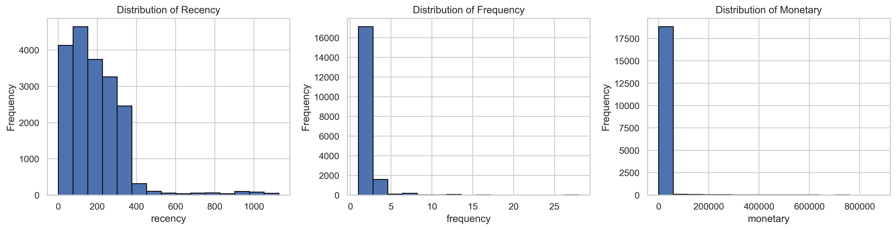
Several candidate values of (k) were evaluated using complementary clustering diagnostics. Rather than relying on a single criterion, the final solution balances cluster separation, compactness, and interpretability. As summarised in Table 5.2, the nine-cluster solution provides the best overall compromise across the internal validation metrics without producing unnecessarily fragmented customer groups.
| k | Silhouette | Calinski–Harabasz | Davies–Bouldin |
|---|---|---|---|
| 2 | 0.4435 | 15024.18 | 0.9683 |
| 3 | 0.3890 | 13311.31 | 1.0315 |
| 4 | 0.4035 | 12695.18 | 0.8897 |
| 5 | 0.4237 | 13171.97 | 0.9205 |
| 6 | 0.4267 | 13676.56 | 0.8533 |
| 7 | 0.4348 | 14390.70 | 0.7965 |
| 8 | 0.4556 | 15406.58 | 0.7315 |
| 9 | 0.4655 | 16264.65 | 0.7046 |
| 10 | 0.4622 | 16513.19 | 0.7133 |
The corresponding diagnostic curves are presented in Figure 5.2.
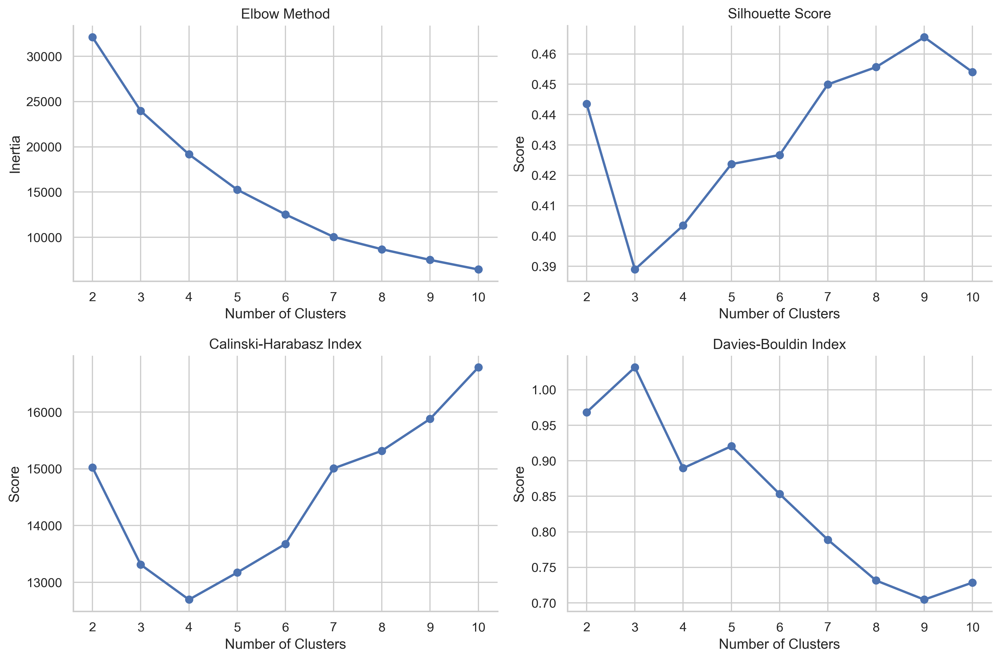
The selected segmentation identifies nine customer profiles that capture meaningful differences in purchasing behaviour. Rather than representing fixed customer categories, these segments describe behavioural tendencies ranging from highly engaged customers to inactive, low-value buyers. A summary of the resulting segments is presented in Table 5.3.
| Segment | Customers | Recency | Frequency | Monetary | Avg. Score |
|---|---|---|---|---|---|
| Champions | 2767 | 87.1 | 3.05 | 28042.2 | 0.74 |
| High Value but Cooling | 2832 | 264.0 | 2.27 | 8903.2 | 0.51 |
| Frequent Low-Spend Customers | 791 | 67.5 | 2.77 | 776.8 | 0.76 |
| Recent Low-Value Customers | 1724 | 87.3 | 1.00 | 1397.6 | 0.66 |
| Active Minimal Buyers | 2463 | 147.6 | 1.20 | 2145.7 | 0.63 |
| Declining Frequent Buyers | 1075 | 107.1 | 2.35 | 122.3 | 0.57 |
| Inactive Minimal Buyers | 4987 | 328.4 | 1.00 | 1054.6 | 0.35 |
| Inactive Low-Value Customers | 2046 | 274.7 | 1.00 | 1352.8 | 0.40 |
| Lost Customers | 434 | 845.6 | 1.01 | 2852.1 | 0.18 |
The three-dimensional representation shown in Figure 5.3 highlights the gradual transition between behavioural groups rather than sharply separated customer categories. This reinforces an important practical point: customer segmentation should be interpreted as a descriptive representation of purchasing behaviour rather than a definitive classification of customer types.
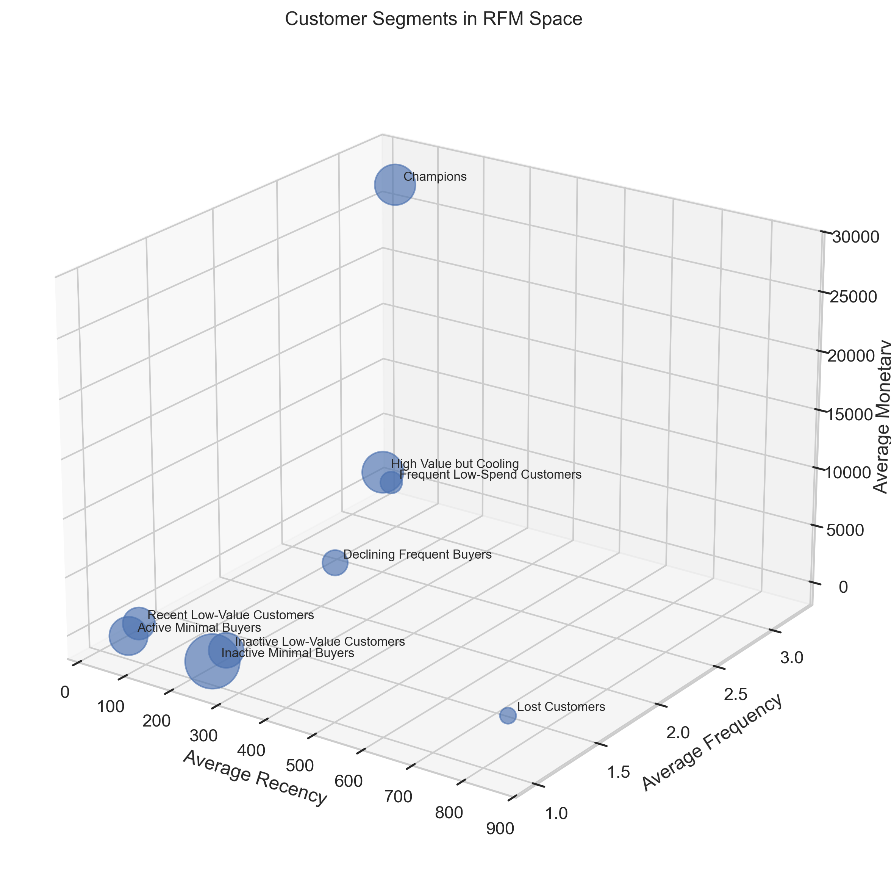
5.4.2 Churn Prediction
Customer segmentation provides a descriptive representation of purchasing behaviour, but it does not indicate whether customers are likely to remain active. The second stage of the workflow therefore introduces a predictive component by estimating the probability that each customer will become inactive during the observation period.
Several supervised learning algorithms were evaluated using the engineered customer-level features described in the previous section. Their performance is summarised in Table 5.4. Rather than relying on a single evaluation metric, the comparison considers both discrimination and ranking performance to identify the model that provides the most reliable estimates of customer retention risk.
| Model | Sampling | AUC | AP | Acc. | BA | Prec. | Rec. | F1 |
|---|---|---|---|---|---|---|---|---|
| RF | SMOTE | 1.000 | 0.971 | 0.997 | 0.999 | 0.800 | 1.000 | 0.889 |
| XGB | Under | 1.000 | 0.951 | 0.987 | 0.994 | 0.455 | 1.000 | 0.625 |
| RF | Original | 1.000 | 0.959 | 0.997 | 0.949 | 0.857 | 0.900 | 0.878 |
| XGB | SMOTE | 0.999 | 0.960 | 0.997 | 0.949 | 0.857 | 0.900 | 0.878 |
| XGB | Original | 0.999 | 0.951 | 0.998 | 0.950 | 0.900 | 0.900 | 0.900 |
| RF | Under | 0.999 | 0.939 | 0.965 | 0.982 | 0.233 | 1.000 | 0.377 |
| LR | SMOTE | 0.999 | 0.892 | 0.987 | 0.994 | 0.455 | 1.000 | 0.625 |
| LR | Original | 0.998 | 0.871 | 0.996 | 0.849 | 0.875 | 0.700 | 0.778 |
| LR | Under | 0.997 | 0.829 | 0.969 | 0.984 | 0.256 | 1.000 | 0.408 |
The best-performing specification was the Random Forest model trained with SMOTE. As shown in Table 5.5, it achieved excellent discrimination on the independent test set, with a ROC AUC of 0.9996 and an Average Precision of 0.9707. More importantly, the model maintained full recall for the churn class while keeping precision at 0.8000, which is a useful balance for retention-oriented applications where missing high-risk customers is usually more costly than reviewing a small number of false positives.
| ROC AUC | Average Precision | Accuracy | Balanced Accuracy | Precision | Recall | F1 |
|---|---|---|---|---|---|---|
| 0.9996 | 0.9707 | 0.9973 | 0.9986 | 0.8000 | 1.0000 | 0.8889 |
The class-level results in Table 5.6 provide a more detailed view of the same behaviour. The model correctly identifies all churn cases in the test set, while most retention cases are also classified correctly. This is particularly relevant because the churn class is very small relative to the retained customer population.
| Class | Precision | Recall | F1-score | Support |
|---|---|---|---|---|
| Retention | 1.0000 | 0.9973 | 0.9986 | 1842 |
| Churn | 0.8000 | 1.0000 | 0.8889 | 20 |
| Accuracy | 0.9973 | 0.9973 | 0.9973 | 0.9973 |
| Macro avg | 0.9000 | 0.9986 | 0.9438 | 1862 |
| Weighted avg | 0.9979 | 0.9973 | 0.9975 | 1862 |
The Receiver Operating Characteristic curve presented in Figure 5.4 demonstrates that the model separates active and inactive customers across a broad range of decision thresholds. Since customer retention datasets are inherently imbalanced, the Precision–Recall curve shown in Figure 5.5 provides an equally important perspective by evaluating the model’s ability to identify genuinely high-risk customers without generating an excessive number of false positives.
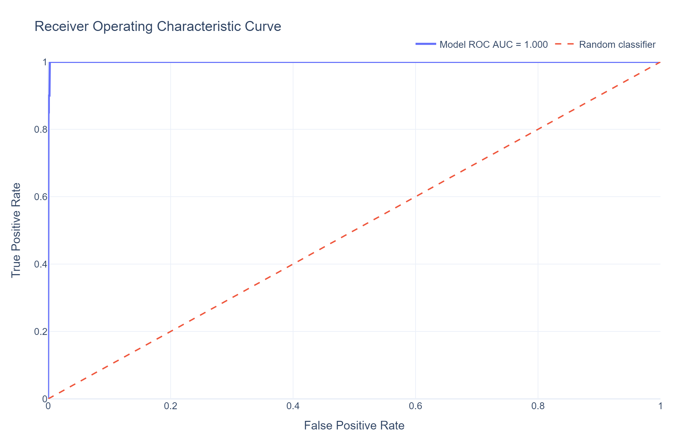
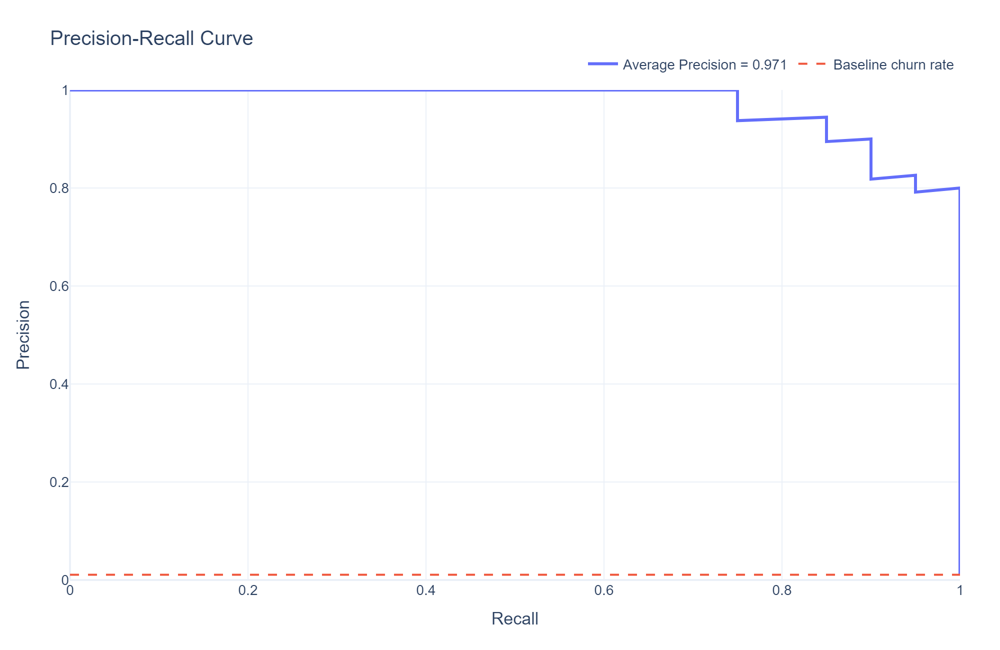
The confusion matrix shown in Figure 5.6 reinforces this interpretation. Most customers are correctly classified, while the remaining errors reflect the intrinsic uncertainty associated with non-contractual customer behaviour. In this setting, some customers naturally purchase at irregular intervals, making it difficult to distinguish perfectly between temporary inactivity and progressive disengagement.
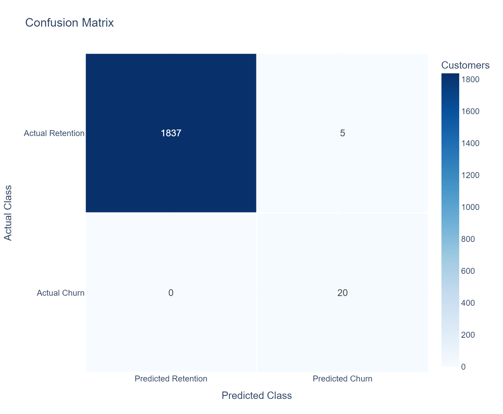
From a business perspective, ranking customers by estimated churn probability is often more useful than producing binary predictions. Marketing teams typically have limited resources and cannot intervene with every customer simultaneously. The cumulative gains curve shown in Figure 5.7 demonstrates that the model concentrates a substantial proportion of future churners within the highest-risk customers, enabling retention campaigns to be prioritised more effectively.
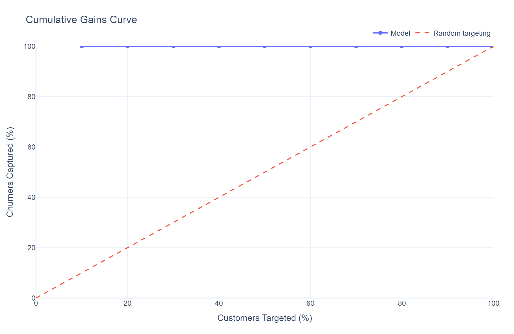
Inspection of the feature importance rankings further supports the behavioural interpretation of the model. As shown in Figure 5.8, variables related to purchasing recency, customer tenure, purchasing cadence, and behavioural segmentation contribute substantially to the predicted probabilities. This consistency suggests that the model is learning meaningful patterns associated with customer engagement rather than relying on spurious statistical relationships.
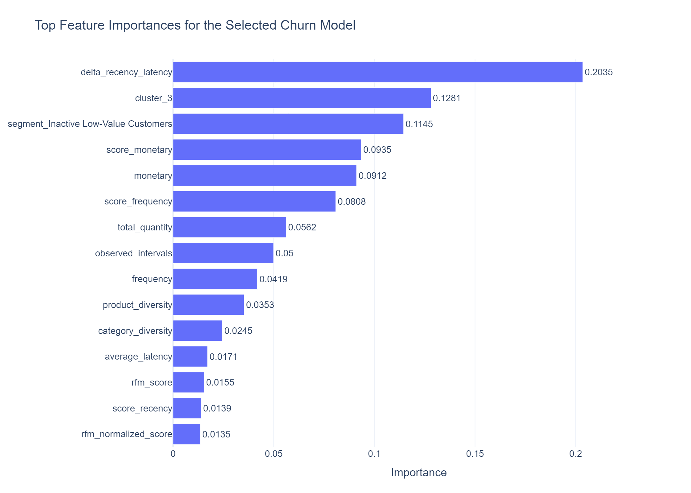
Although the predictive performance is strong, several limitations should be acknowledged. The model depends on the operational definition of churn adopted in this project, meaning that alternative calibration or observation windows would naturally produce different labels. The churn class is also small in absolute terms, so the excellent performance metrics should be interpreted with caution. The predicted probabilities quantify behavioural risk rather than certainty, and customers identified as high risk should be understood as candidates for proactive retention strategies rather than customers who have definitively left the business.
5.4.3 Risk-Adjusted Customer Lifetime Value Prediction
The final stage of the workflow integrates customer profitability with the behavioural information obtained during the segmentation and churn analyses. Rather than estimating customer value exclusively from historical purchases, the objective is to approximate a risk-adjusted valuation that combines observed profitability with expected customer retention. This produces a more realistic prioritisation framework by recognising that customers with similar historical revenue may contribute very differently to future business performance.
Several regression algorithms were evaluated using the customer-level features engineered throughout the project. Their predictive performance is summarised in Table 5.7. The Random Forest regressor achieved the best overall performance, with the lowest RMSE and MAE and the highest (R^2), indicating that it reproduced the constructed valuation framework more accurately than the other candidate models.
| Model | RMSE | MAE | \(R^2\) |
|---|---|---|---|
| Random Forest | 1936.5286 | 345.9793 | 0.9966 |
| XGBoost | 2178.4778 | 473.2691 | 0.9957 |
| Regression Tree | 2607.8713 | 456.9903 | 0.9938 |
| K-Nearest Neighbors Regression | 4066.1658 | 880.0326 | 0.9850 |
| Ridge Regression | 8251.9469 | 4268.8566 | 0.9384 |
| LASSO Regression | 8300.8116 | 4313.9835 | 0.9377 |
| Linear Regression | 8316.9955 | 4332.1693 | 0.9374 |
| Support Vector Regression | 35181.7991 | 19710.3313 | -0.1193 |
The selected model was then evaluated on the independent test set. As reported in Table 5.8, the final Random Forest model retained very strong predictive performance, explaining most of the variation in the constructed CLV target while keeping the average absolute error relatively small.
| Model | RMSE | MAE | \(R^2\) |
|---|---|---|---|
| Random Forest | 2028.6151 | 363.8659 | 0.9963 |
The relationship between predicted and observed customer lifetime values is illustrated in Figure 5.9. Most observations are concentrated around the identity line, indicating that the regression model successfully reproduces the underlying valuation framework across a broad range of customer values. The residual analysis shown in Figure 5.10 further suggests that no major systematic prediction bias is present, although variability naturally increases for the highest-value customers, which represent only a small fraction of the customer base.
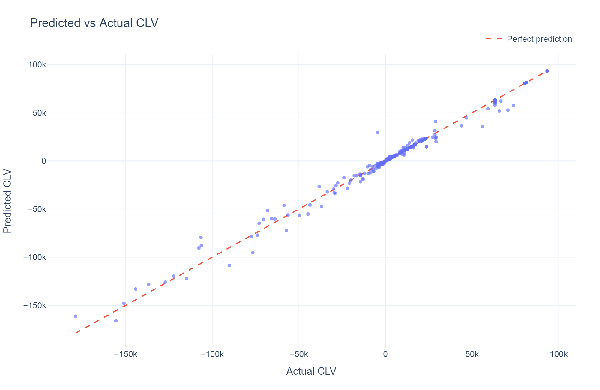
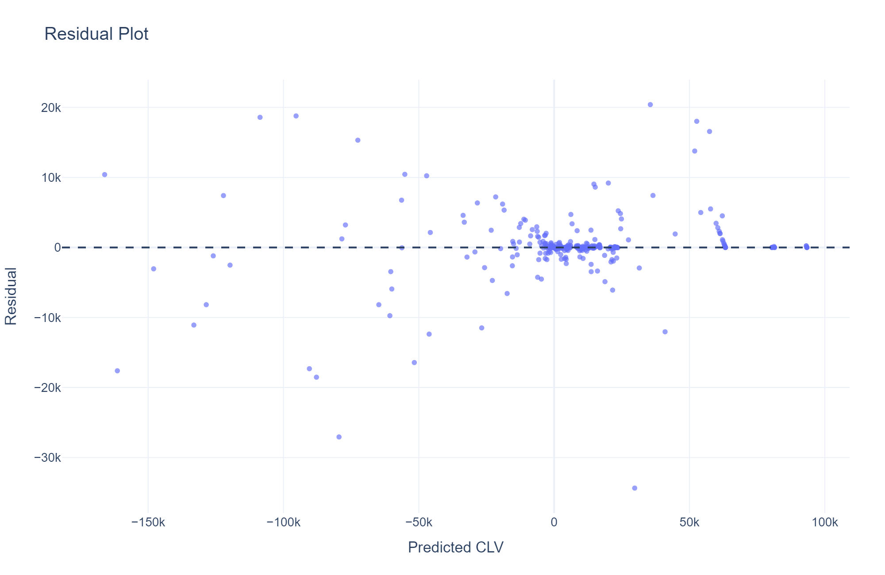
Feature importance analysis provides additional insight into the behaviour of the regression model. As shown in Figure 5.11, the estimated customer value is influenced not only by historical profitability but also by behavioural characteristics derived during the previous stages of the workflow, including purchasing recency, transaction frequency, customer tenure, and the outputs of the churn prediction model. This demonstrates that the estimated lifetime value reflects a combination of historical performance and expected future behaviour rather than historical spending alone.
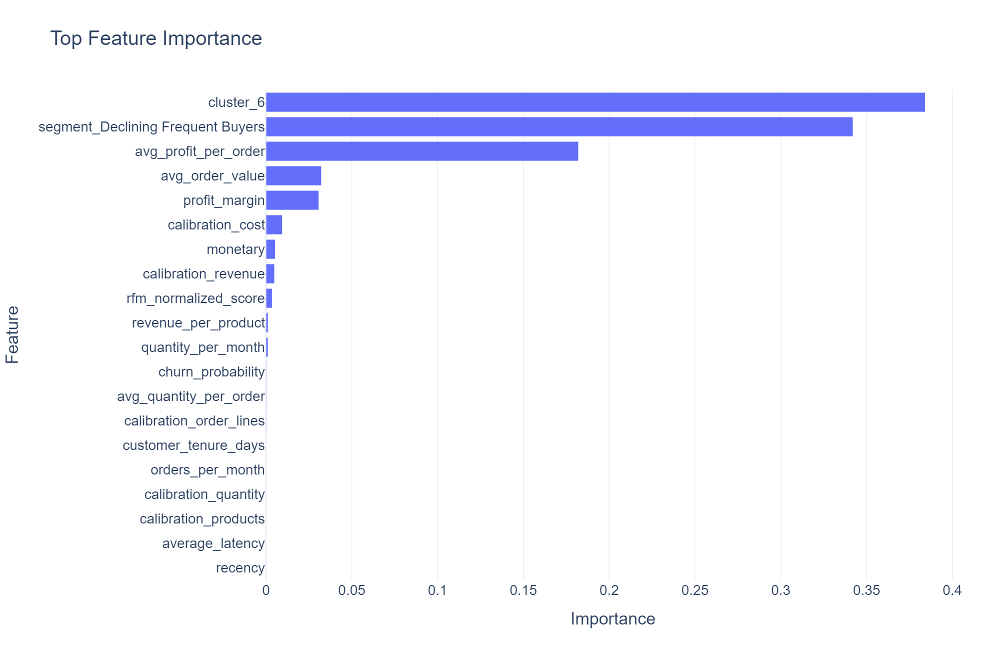
The segment-level results in Table 5.9 show why customer value should not be interpreted only at the individual level. Some segments contribute strongly because they contain many customers, while others contribute through high average expected value. The largest aggregate predicted value is concentrated in Declining Frequent Buyers, mainly because this segment combines a large customer base with a very high average predicted CLV. By contrast, Lost Customers and Inactive Low-Value Customers produce negative expected value under the adopted framework, reflecting weak profitability and unfavourable behavioural assumptions.
| Segment | Customers | Avg. Predicted CLV | Total Predicted CLV |
|---|---|---|---|
| Declining Frequent Buyers | 1395 | 76859.60 | 107219140.34 |
| High Value but Cooling | 454 | 11367.20 | 5160706.87 |
| Frequent Low-Spend Customers | 928 | 10412.29 | 9662602.51 |
| Active Minimal Buyers | 1767 | 10098.15 | 17843434.86 |
| Inactive Minimal Buyers | 686 | 2776.18 | 1904456.08 |
| Recent Low-Value Customers | 609 | 2748.03 | 1673548.64 |
| Champions | 41 | 242.58 | 9945.82 |
| Lost Customers | 53 | -71046.79 | -3765480.03 |
| Inactive Low-Value Customers | 273 | -18539.27 | -5061219.47 |
These differences are also visible in Figure 5.12 and Figure 5.13. The first figure shows the distribution of predicted CLV within each behavioural segment, while the second aggregates predicted value across the customer portfolio. Together, they show that customer prioritisation should consider both individual-level value and the broader segment structure in which that value is concentrated.
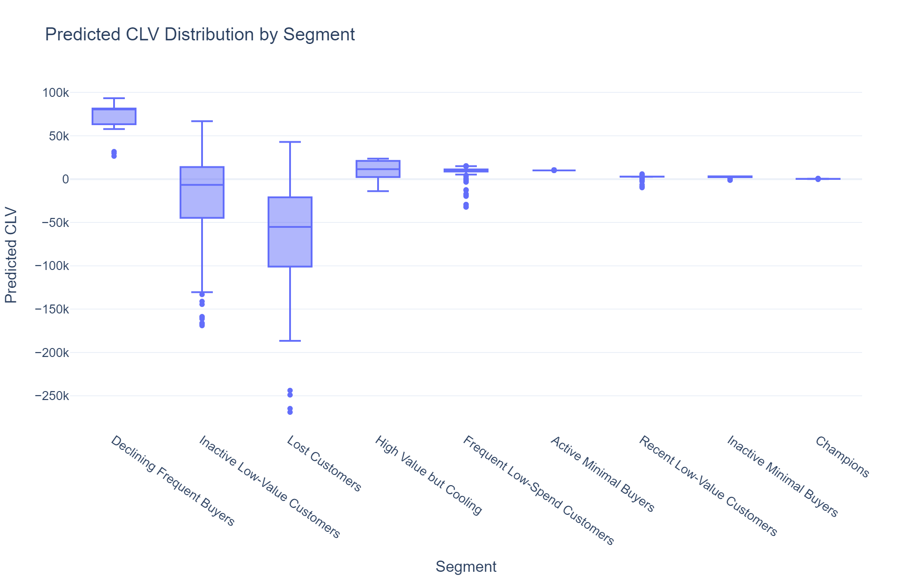
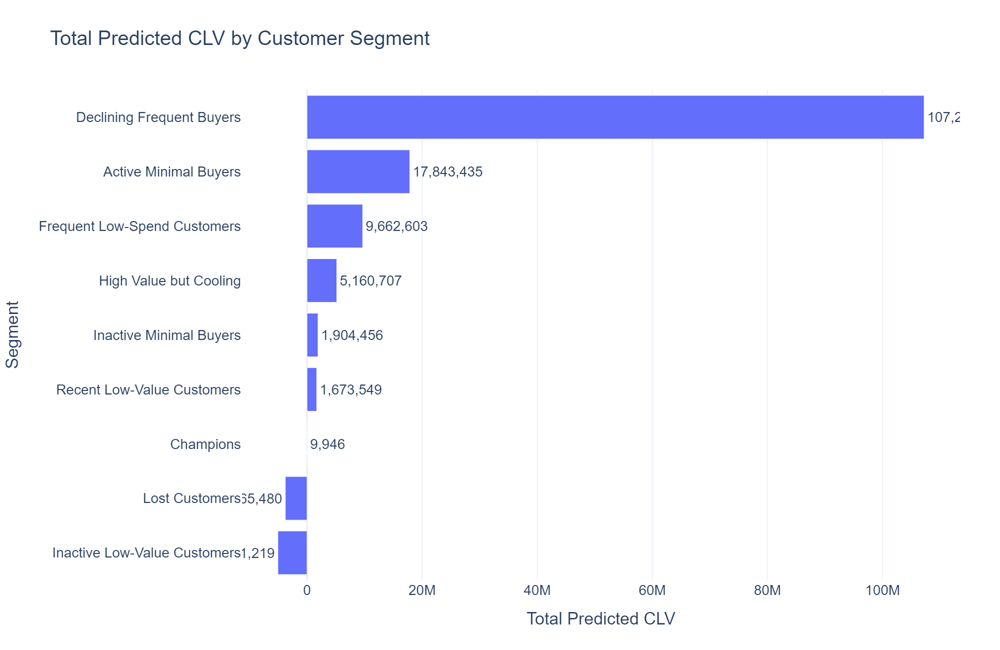
These results should be interpreted within the assumptions adopted to construct the valuation framework. The response variable used for model training is not directly observed in the AdventureWorks database but is derived from historical profitability, behavioural segmentation, predicted retention, and explicit discount-rate assumptions. Consequently, the regression model should be understood as learning to approximate this internally consistent valuation framework rather than predicting an objectively measurable quantity. Alternative assumptions regarding customer retention or discounting would naturally produce different numerical estimates, although the overall modelling framework would remain unchanged.
5.5 Technical Appendix (Optional)
The main chapter emphasises the practical application of customer analytics using transactional retail data. This appendix complements the discussion by summarising the principal mathematical concepts underlying the implementation. Rather than providing exhaustive theoretical derivations, it introduces the core formulations used throughout the workflow, including behavioural customer segmentation, the operational definition of churn, and the construction of the risk-adjusted Customer Lifetime Value (CLV) framework.
5.5.1 RFM Analysis
Recency, Frequency, and Monetary (RFM) analysis is one of the most widely used approaches for summarising customer purchasing behaviour in transactional businesses. Instead of modelling the complete purchase history, it represents each customer through three complementary behavioural variables:
- Recency, measuring the time elapsed since the customer’s most recent purchase.
- Frequency, representing the total number of completed purchases during the observation period.
- Monetary value, describing the customer’s cumulative spending.
For customer \(i\), Recency is computed as
\[ R_i=t_{\mathrm{ref}}-t_{\mathrm{last},i}, \tag{5.1}\]
where \(t_{\mathrm{ref}}\) denotes the reference date used for the analysis and \(t_{\mathrm{last},i}\) is the date of the customer’s most recent transaction.
Frequency is defined as
\[ F_i=n_i, \tag{5.2}\]
where \(n_i\) is the number of completed purchases.
Monetary value is calculated as
\[ M_i=\sum_{j=1}^{n_i}v_{ij}, \tag{5.3}\]
where \(v_{ij}\) represents the monetary value of transaction \(j\).
Although conceptually simple, these three variables capture complementary aspects of customer behaviour and provide the behavioural representation used throughout the remainder of the workflow. Because Frequency and Monetary value typically exhibit strong positive skewness, additional preprocessing is required before applying distance-based clustering algorithms.
5.5.1.1 Box-Cox Transformation
The RFM variables exhibit markedly different distributions, with Frequency and Monetary value generally dominated by a relatively small number of high-value observations. Since K-Means relies on Euclidean distances, these extreme values can disproportionately influence the clustering process.
To reduce this effect, each RFM variable is transformed using the Box-Cox transformation,
\[ y^{(\lambda)}= \begin{cases} \dfrac{y^\lambda-1}{\lambda}, & \lambda \neq 0,\\ \log(y), & \lambda=0, \end{cases} \tag{5.4}\]
where the transformation parameter \(\lambda\) is estimated from the observed data.
After transformation, each variable is standardised to zero mean and unit variance before clustering. The transformed variables are used exclusively during model fitting; all business interpretation remains based on the original RFM variables.
5.5.1.2 K-Means Clustering
Customer segmentation is performed using the K-Means clustering algorithm, which partitions customers into \(K\) groups by minimising the within-cluster sum of squared Euclidean distances,
\[ \min_{C_1,\ldots,C_K} \sum_{k=1}^{K} \sum_{x_i\in C_k} \left|x_i-\mu_k\right|^2, \tag{5.5}\]
where \(\mu_k\) denotes the centroid of cluster \(k\).
The optimisation alternates between assigning observations to their nearest centroid and updating the centroids according to the mean of the assigned observations until convergence.
Since no ground-truth customer labels exist, the optimal number of clusters is determined using complementary internal validation metrics together with business interpretability. Once the clusters have been identified, they are interpreted using the original RFM variables rather than the transformed feature space, allowing each segment to be associated with a meaningful purchasing profile.
5.5.2 Behavioural Churn Definition
Unlike subscription-based businesses, transactional retail datasets rarely contain explicit churn events. Customer inactivity must therefore be inferred from observed purchasing behaviour rather than directly measured. The implementation adopted in this project defines churn through a behavioural rule that combines customer engagement during the calibration period with observed activity during a subsequent validation period.
Let \(S_i\) denote the behavioural segment assigned to customer \(i\), \(R_i\) the customer’s recency, \(\bar{L}_i\) the average time between consecutive purchases (purchase latency), and \(\mathrm{Score}_i\) the within-segment RFM score. Furthermore, let \(\overline{\mathrm{Score}}_{S_i}\) represent the average RFM score of the customer’s segment.
A customer is considered a potential churn candidate when all behavioural conditions
\[ S_i\in\mathcal{L}, \]
\[ R_i>\bar{L}_i, \]
and
\[ \mathrm{Score}_i< \overline{\mathrm{Score}}_{S_i} \]
are simultaneously satisfied, where \(\mathcal{L}\) denotes the set of low-activity customer segments identified during the RFM analysis.
The final churn label is then determined by inspecting future purchasing behaviour during the validation period,
\[ y_i= \begin{cases} 1, & \text{if the customer makes no purchases during the validation window},\\ 0, & \text{otherwise}. \end{cases} \tag{5.6}\]
This formulation differs from the common approach of defining churn solely through future inactivity. Instead, it first identifies customers whose historical purchasing behaviour is already consistent with progressive disengagement and subsequently verifies whether this behaviour persists during the validation period. By separating behavioural identification from future validation, the resulting target remains suitable for supervised learning while reducing the risk of labelling temporarily inactive customers as permanent churners.
The chronological separation between calibration and validation periods also prevents information leakage, since every explanatory variable is computed exclusively from information that would have been available at the time the prediction is made.
5.5.2.1 Classification Metrics
Customer churn prediction is formulated as a binary classification problem. Let
- \(TP\): true positives,
- \(FP\): false positives,
- \(TN\): true negatives,
- \(FN\): false negatives.
Several complementary metrics are used throughout the chapter to evaluate predictive performance.
Precision measures the proportion of customers predicted to churn who actually become inactive,
\[ \mathrm{Precision} = \frac{TP}{TP+FP}, \tag{5.7}\]
where higher values indicate fewer false positive predictions.
Recall, also referred to as sensitivity, measures the proportion of actual churners correctly identified by the classifier,
\[ \mathrm{Recall} = \frac{TP}{TP+FN}, \tag{5.8}\]
making it particularly relevant when missing high-risk customers carries a significant commercial cost.
The harmonic mean of Precision and Recall is given by the F1-score,
\[ F_1 = 2 \cdot \frac{\mathrm{Precision}\times\mathrm{Recall}} {\mathrm{Precision}+\mathrm{Recall}}, \tag{5.9}\]
which provides a balanced summary of classifier performance under class imbalance.
Threshold-independent evaluation is performed using the Receiver Operating Characteristic (ROC) curve and the Precision–Recall curve. While ROC analysis measures the trade-off between the true positive rate and false positive rate across all possible classification thresholds, Precision–Recall curves provide a more informative assessment when the positive class is relatively uncommon, as is typically the case in customer retention problems.
From a business perspective, ranking quality is often more important than binary classification accuracy. For this reason, the implementation also evaluates cumulative gains, which quantify how effectively the model concentrates future churners within the highest-ranked customers. This ranking perspective is particularly useful for prioritising retention campaigns when marketing resources are limited.
5.5.3 Risk-Adjusted Customer Lifetime Value
Customer Lifetime Value (CLV) is commonly defined as the present value of the future profits expected from a customer relationship. A general formulation is given by
\[ \mathrm{CLV} = \sum_{t=1}^{T} \frac{\mathbb{E}[P_t]} {(1+d)^t}, \tag{5.10}\]
where \(\mathbb{E}[P_t]\) denotes the expected customer profit during period \(t\), \(d\) is the discount rate, and \(T\) represents the planning horizon.
In practice, however, neither future profits nor customer retention are directly observable in non-contractual retail businesses. The implementation presented in this chapter therefore constructs a risk-adjusted valuation framework that combines observed customer profitability with behavioural information derived from the previous stages of the workflow.
Let \(\hat{P}_i\) denote the estimated average profit generated by customer \(i\), \(c_{S_i}\) the historical churn rate associated with the behavioural segment (S_i), and (d_{S_i}) the corresponding segment-specific discount rate. Assuming that the probability of customer retention remains approximately constant within each behavioural segment, the expected Customer Lifetime Value is estimated as
\[ \widehat{\mathrm{CLV}}_i = \sum_{t=1}^{T} \frac{ \hat{P}_i \left(1-c_{S_i}\right)^{t-1} } {\left(1+d_{S_i}\right)^t}, \tag{5.11}\]
where the term
\[ \left(1-c_{S_i}\right)^{t-1} \]
represents the probability that customer \(i\) remains active up to period \(t\).
Unlike the classical formulation, both the expected retention and the discount rate depend on the customer’s behavioural segment rather than being assumed identical across the entire customer base. This allows customers exhibiting different purchasing patterns to be valued under different behavioural assumptions while preserving a transparent and reproducible valuation framework.
The resulting quantity should not be interpreted as an objectively measurable future lifetime value. Instead, it represents a model-based valuation constructed from observed profitability together with explicit assumptions regarding customer retention and the time value of money.
Once the target variable has been constructed, Customer Lifetime Value prediction becomes a supervised regression problem,
\[ \widehat{\mathrm{CLV}}_i = f(\mathbf{x}_i)+\varepsilon_i, \tag{5.12}\]
where \(\mathbf{x}_i\) denotes the customer-level feature vector engineered throughout the project, \(f(\cdot)\) represents the regression model, and \(\varepsilon_i\) captures the unexplained prediction error.
Rather than estimating future profits directly, the regression model learns to approximate the valuation framework defined by Equation 5.11. This considerably reduces the computational effort required to evaluate new customers while maintaining consistency with the behavioural and financial assumptions adopted throughout the analytical workflow.